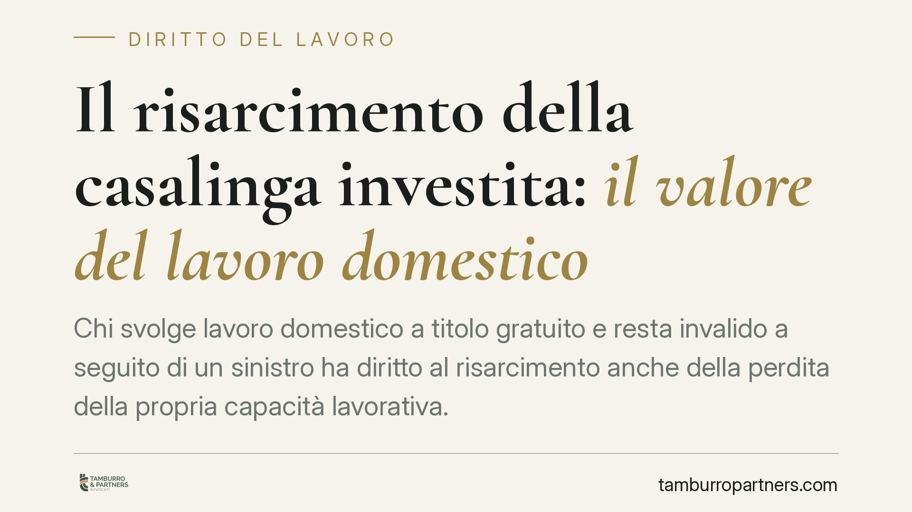

Il risarcimento della casalinga investita: il valore del lavoro domestico
Chi svolge lavoro domestico a titolo gratuito e resta invalido a seguito di un sinistro ha diritto al risarcimento anche della perdita della propria capacità lavorativa. Un'attività non retribuita produce comunque un valore economico. Vediamo su quali basi la giurisprudenza fonda questo principio e come tutelarsi nella fase di liquidazione.

Il fatto e perché conta
Una casalinga vittima di un incidente stradale non percepisce uno stipendio. Per lungo tempo questo ha alimentato l'idea che, in assenza di reddito documentabile, non vi fosse un danno patrimoniale da risarcire. La giurisprudenza ha superato questa impostazione: il lavoro domestico ha un valore economico misurabile e la sua compromissione costituisce una perdita risarcibile.
Il tema riguarda la responsabilità civile e l'infortunistica stradale, non il diritto del lavoro in senso tecnico. Il collegamento con la nozione di "lavoro" è solo economico: l'attività domestica viene valorizzata come apporto produttivo alla famiglia.
Inquadramento normativo
La base resta l'art. 2043 c.c., che obbliga chi cagiona un danno ingiusto a risarcirlo, e l'art. 1223 c.c., che estende il risarcimento sia al danno emergente sia al lucro cessante, cioè al mancato guadagno.
Sul piano della quantificazione entra in gioco l'art. 137 del D.Lgs. 209/2005 (Codice delle Assicurazioni Private). La norma fissa il criterio per determinare il reddito ai fini del lucro cessante e stabilisce che, quando il reddito non è documentabile in altro modo, si assume come parametro minimo un importo pari al triplo dell'assegno sociale (già pensione sociale).
È importante un chiarimento. L'art. 137 CAP non menziona la casalinga né disciplina direttamente il lavoro domestico. La norma detta solo un criterio minimo per i redditi non documentabili. L'applicazione di questo parametro alla figura della casalinga è frutto di elaborazione giurisprudenziale, di natura equitativa, che ha utilizzato quel minimo legale come punto di partenza per valorizzare economicamente l'attività domestica. Le due cose vanno tenute distinte: da un lato il testo di legge, dall'altro l'interpretazione che ne ha esteso la portata.
Quanto al danno alla persona, va ricordato che dopo le Sezioni Unite di San Martino (Cass. SS.UU. nn. 26972-26975/2008) il danno non patrimoniale è concepito come categoria unitaria. Le sue componenti, quella biologica (la lesione dell'integrità psicofisica) e quella morale/soggettiva (la sofferenza interiore), non sono voci autonome sempre cumulabili in senso automatico, ma aspetti di un danno da liquidare in modo unitario, evitando duplicazioni. Distinto e cumulabile resta invece il danno patrimoniale, che comprende proprio la perdita della capacità di svolgere il lavoro domestico.
Implicazioni pratiche
Per la casalinga infortunata e per il suo nucleo familiare questo significa che il risarcimento non si esaurisce nel danno biologico. Se l'invalidità permanente riduce o azzera la capacità di gestire la casa, di accudire familiari o di provvedere alle incombenze quotidiane, si apre una voce di danno patrimoniale a sé stante.
La quantificazione può muovere dal criterio minimo del triplo dell'assegno sociale, ma non è vincolata verso il basso: se si dimostra che l'attività domestica aveva un valore superiore, ad esempio per l'ampiezza del nucleo o per la presenza di persone non autosufficienti, il risarcimento può essere adeguato in via equitativa.
Da qui l'importanza della prova. Il valore del ruolo domestico va documentato, non affermato. E la percentuale di invalidità incide direttamente sull'entità della perdita: una valutazione medico-legale accurata è decisiva.
Cosa fare in concreto
- Documenta il ruolo domestico: raccogli elementi che attestino composizione del nucleo familiare, presenza di figli minori o familiari non autosufficienti, effettiva dedizione all'attività di casa.
- Richiedi una valutazione medico-legale approfondita: fai accertare con precisione il grado di invalidità permanente e la sua incidenza sulle attività domestiche concrete.
- Non firmare in fretta la quietanza a saldo e stralcio: la quietanza liberatoria "a saldo" chiude ogni pretesa; una volta sottoscritta, difficilmente si potranno chiedere ulteriori somme, anche se emergessero danni non considerati.
- Distingui le voci di danno: verifica che l'offerta consideri separatamente il danno biologico e il danno patrimoniale da perdita della capacità domestica, senza confonderli.
- Fai valutare l'offerta prima di accettarla: è opportuno sottoporre la proposta dell'assicurazione a un esame tecnico, per verificarne la congruità rispetto al caso concreto.
Ogni sinistro presenta variabili proprie: entità delle lesioni, età, situazione familiare. Un'analisi documentale e medico-legale accurata è la premessa di una richiesta fondata, senza che ciò implichi alcuna garanzia sull'esito.
Disclaimer
Contributo informativo a cura di Tamburro & Partners - Avv. Giuseppe Tamburro. Non costituisce parere legale.
Ogni storia di lavoro ha i suoi tempi.
Se gestisci HR e vuoi un confronto su contenzioso, ispezioni o licenziamenti, scrivi allo studio. Ti rispondiamo entro un giorno lavorativo.